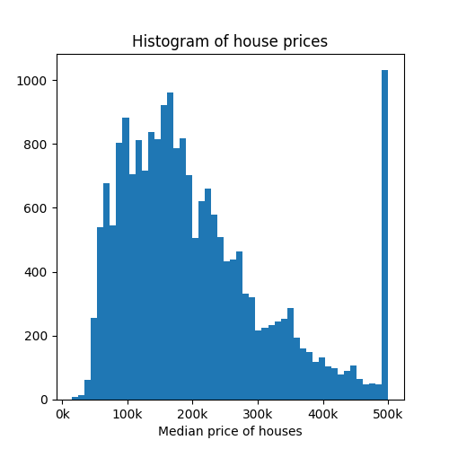
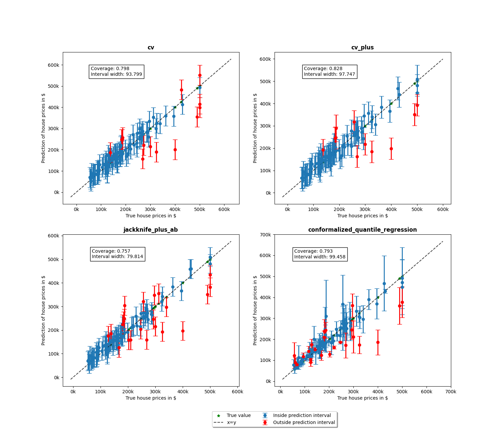
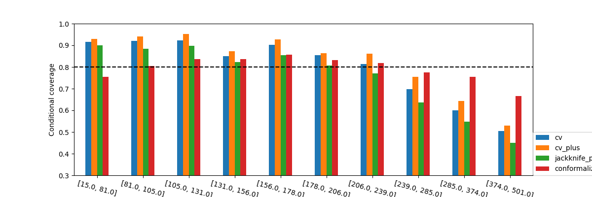
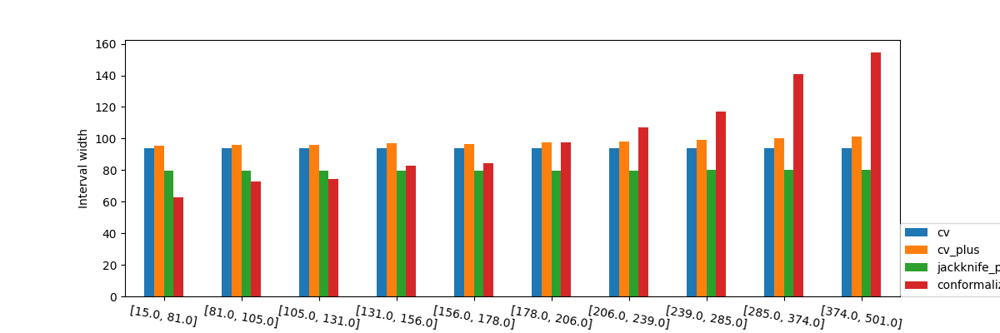

Note
Click here to download the full example code
Conformalized quantile regression on gamma distributed data¶
We will use the sklearn california housing dataset as the base for the
comparison of the different methods available on MAPIE. Two classes will
be used: ConformalizedQuantileRegressor for CQR.
We use CrossConformalRegressor and
JackknifeAfterBootstrapRegressor for the other methods.
For this example, the estimator will be LGBMRegressor with
objective="quantile" as this is a necessary component for CQR, the
regression needs to be from a quantile regressor.
We then compare the coverage and the intervals width.
# sphinx_gallery_thumbnail_number = 3
import warnings
import matplotlib.pyplot as plt
import numpy as np
import pandas as pd
from lightgbm import LGBMRegressor
from matplotlib.offsetbox import AnnotationBbox, TextArea
from matplotlib.ticker import FormatStrFormatter
from scipy.stats import randint, uniform
from sklearn.datasets import fetch_california_housing
from sklearn.model_selection import KFold, RandomizedSearchCV, train_test_split
from mapie.metrics.regression import (
regression_coverage_score,
regression_mean_width_score,
)
from mapie.regression import (
ConformalizedQuantileRegressor,
CrossConformalRegressor,
JackknifeAfterBootstrapRegressor,
)
RANDOM_STATE = 1
rng = np.random.default_rng(RANDOM_STATE)
round_to = 3
warnings.filterwarnings("ignore")
1. Data¶
The target variable of this dataset is the median house value for the California districts. This dataset is composed of 8 features, including variables such as the age of the house, the median income of the neighborhood, the average number rooms or bedrooms or even the location in latitude and longitude. In total there are around 20k observations. As the value is expressed in thousands of $ we will multiply it by 100 for better visualization (note that this will not affect the results).
data = fetch_california_housing(as_frame=True)
X = pd.DataFrame(data=data.data, columns=data.feature_names)
y = pd.DataFrame(data=data.target) * 100
Let's visualize the dataset by showing the correlations between the independent variables.
df = pd.concat([X, y], axis=1)
pear_corr = df.corr(method="pearson")
pear_corr.style.background_gradient(cmap="Greens", axis=0)
Now let's visualize a histogram of the price of the houses.
fig, axs = plt.subplots(1, 1, figsize=(5, 5))
axs.hist(y, bins=50)
axs.set_xlabel("Median price of houses")
axs.set_title("Histogram of house prices")
axs.xaxis.set_major_formatter(FormatStrFormatter("%.0f" + "k"))
plt.show()

Let's now create the different splits for the dataset, with a training, conformalize and test set. Remember that the conformalize set is used to conformalize the prediction intervals.
X_train_conformalize, X_test, y_train_conformalize, y_test = train_test_split(
X, y["MedHouseVal"], random_state=RANDOM_STATE
)
2. Optimizing estimator¶
Before estimating uncertainties, let's start by optimizing the base model
in order to reduce our prediction error. We will use the
LGBMRegressor in the quantile setting. The optimization
is performed using RandomizedSearchCV
to find the optimal model to predict the house prices.
estimator = LGBMRegressor(
objective="quantile", alpha=0.5, random_state=RANDOM_STATE, verbose=-1
)
params_distributions = dict(
num_leaves=randint(low=10, high=50),
max_depth=randint(low=3, high=20),
n_estimators=randint(low=50, high=100),
learning_rate=uniform(),
)
optim_model = RandomizedSearchCV(
estimator,
param_distributions=params_distributions,
n_jobs=-1,
n_iter=10,
cv=KFold(n_splits=5, shuffle=True),
random_state=RANDOM_STATE,
)
optim_model.fit(X_train_conformalize, y_train_conformalize)
estimator = optim_model.best_estimator_
3. Comparison of MAPIE methods¶
We will now proceed to compare the different methods available in MAPIE used for uncertainty quantification on regression settings. For this tutorial we will compare the "cv", "Jackknife plus after Bootstrap", "cv plus" and "conformalized quantile regression". Please have a look at the theoretical description of the documentation for more details on these methods.
We also create two functions, one to sort the dataset in increasing values
of y_test and a plotting function, so that we can plot all predictions
and prediction intervals for different conformal methods.
def sort_y_values(y_test, y_pred, y_pis):
"""
Sorting the dataset in order to make plots using the fill_between function.
"""
indices = np.argsort(y_test)
y_test_sorted = np.array(y_test)[indices]
y_pred_sorted = y_pred[indices]
y_lower_bound = y_pis[:, 0, 0][indices]
y_upper_bound = y_pis[:, 1, 0][indices]
return y_test_sorted, y_pred_sorted, y_lower_bound, y_upper_bound
def plot_prediction_intervals(
title,
axs,
y_test_sorted,
y_pred_sorted,
lower_bound,
upper_bound,
coverage,
width,
num_plots_idx,
):
"""
Plot of the prediction intervals for each different conformal
method.
"""
axs.yaxis.set_major_formatter(FormatStrFormatter("%.0f" + "k"))
axs.xaxis.set_major_formatter(FormatStrFormatter("%.0f" + "k"))
lower_bound_ = np.take(lower_bound, num_plots_idx)
y_pred_sorted_ = np.take(y_pred_sorted, num_plots_idx)
y_test_sorted_ = np.take(y_test_sorted, num_plots_idx)
error = y_pred_sorted_ - lower_bound_
warning1 = y_test_sorted_ > y_pred_sorted_ + error
warning2 = y_test_sorted_ < y_pred_sorted_ - error
warnings = warning1 + warning2
axs.errorbar(
y_test_sorted_[~warnings],
y_pred_sorted_[~warnings],
yerr=np.abs(error[~warnings]),
capsize=5,
marker="o",
elinewidth=2,
linewidth=0,
label="Inside prediction interval",
)
axs.errorbar(
y_test_sorted_[warnings],
y_pred_sorted_[warnings],
yerr=np.abs(error[warnings]),
capsize=5,
marker="o",
elinewidth=2,
linewidth=0,
color="red",
label="Outside prediction interval",
)
axs.scatter(
y_test_sorted_[warnings],
y_test_sorted_[warnings],
marker="*",
color="green",
label="True value",
)
axs.set_xlabel("True house prices in $")
axs.set_ylabel("Prediction of house prices in $")
ab = AnnotationBbox(
TextArea(
f"Coverage: {np.round(coverage, round_to)}\n"
+ f"Interval width: {np.round(width, round_to)}"
),
xy=(np.min(y_test_sorted_) * 3, np.max(y_pred_sorted_ + error) * 0.95),
)
lims = [
np.min([axs.get_xlim(), axs.get_ylim()]), # min of both axes
np.max([axs.get_xlim(), axs.get_ylim()]), # max of both axes
]
axs.plot(lims, lims, "--", alpha=0.75, color="black", label="x=y")
axs.add_artist(ab)
axs.set_title(title, fontweight="bold")
Here, we use MAPIE to return the predictions and prediction intervals.
We will use an confidence_level=CONFIDENCE_LEVEL, (this is the target
coverage for our prediction intervals).
Note that that we will use symmetrical residuals for the CQR.
STRATEGIES = {
"cv": {
"class": CrossConformalRegressor,
"init_params": dict(method="base", cv=10),
},
"cv_plus": {
"class": CrossConformalRegressor,
"init_params": dict(method="plus", cv=10),
},
"jackknife_plus_ab": {
"class": JackknifeAfterBootstrapRegressor,
"init_params": dict(method="plus", resampling=50),
},
"conformalized_quantile_regression": {
"class": ConformalizedQuantileRegressor,
"init_params": dict(),
},
}
CONFIDENCE_LEVEL = 0.8
y_pred, y_pis = {}, {}
y_test_sorted, y_pred_sorted, lower_bound, upper_bound = {}, {}, {}, {}
coverage, width = {}, {}
for strategy_name, strategy_params in STRATEGIES.items():
init_params = strategy_params["init_params"]
class_ = strategy_params["class"]
if strategy_name == "conformalized_quantile_regression":
X_train, X_conformalize, y_train, y_conformalize = train_test_split(
X_train_conformalize,
y_train_conformalize,
test_size=0.3,
random_state=RANDOM_STATE,
)
mapie = class_(estimator, confidence_level=CONFIDENCE_LEVEL, **init_params)
mapie.fit(X_train, y_train)
mapie.conformalize(X_conformalize, y_conformalize)
y_pred[strategy_name], y_pis[strategy_name] = mapie.predict_interval(
X_test, symmetric_correction=True
)
else:
mapie = class_(
estimator,
confidence_level=CONFIDENCE_LEVEL,
random_state=RANDOM_STATE,
**init_params,
)
mapie.fit_conformalize(X_train_conformalize, y_train_conformalize)
y_pred[strategy_name], y_pis[strategy_name] = mapie.predict_interval(X_test)
(
y_test_sorted[strategy_name],
y_pred_sorted[strategy_name],
lower_bound[strategy_name],
upper_bound[strategy_name],
) = sort_y_values(y_test, y_pred[strategy_name], y_pis[strategy_name])
coverage[strategy_name] = regression_coverage_score(y_test, y_pis[strategy_name])[0]
width[strategy_name] = regression_mean_width_score(y_pis[strategy_name])[0]
We will now proceed to the plotting stage, note that we only plot 2% of the observations in order to not crowd the plot too much.
perc_obs_plot = 0.02
num_plots = rng.choice(len(y_test), int(perc_obs_plot * len(y_test)), replace=False)
fig, axs = plt.subplots(2, 2, figsize=(15, 13))
coords = [axs[0, 0], axs[0, 1], axs[1, 0], axs[1, 1]]
for strategy_name, coord in zip(STRATEGIES.keys(), coords):
plot_prediction_intervals(
strategy_name,
coord,
y_test_sorted[strategy_name],
y_pred_sorted[strategy_name],
lower_bound[strategy_name],
upper_bound[strategy_name],
coverage[strategy_name],
width[strategy_name],
num_plots,
)
lines_labels = [ax.get_legend_handles_labels() for ax in fig.axes]
lines, labels = [sum(_, []) for _ in zip(*lines_labels)]
plt.legend(
lines[:4],
labels[:4],
loc="upper center",
bbox_to_anchor=(0, -0.15),
fancybox=True,
shadow=True,
ncol=2,
)
plt.show()

We notice more adaptability of the prediction intervals for the conformalized quantile regression while the other methods have fixed interval width.
def get_coverages_widths_by_bins(
want, y_test, y_pred, lower_bound, upper_bound, STRATEGIES, bins
):
"""
Given the results from MAPIE, this function split the data
according the the test values into bins and calculates coverage
or width per bin.
"""
cuts = []
cuts_ = pd.qcut(y_test["cv"], bins).unique()[:-1]
for item in cuts_:
cuts.append(item.left)
cuts.append(cuts_[-1].right)
cuts.append(np.max(y_test["cv"]) + 1)
recap = {}
for i in range(len(cuts) - 1):
cut1, cut2 = cuts[i], cuts[i + 1]
name = f"[{np.round(cut1, 0)}, {np.round(cut2, 0)}]"
recap[name] = []
for strategy in STRATEGIES:
indices = np.where((y_test[strategy] > cut1) * (y_test[strategy] <= cut2))
y_test_trunc = np.take(y_test[strategy], indices)
y_low_ = np.take(lower_bound[strategy], indices)
y_high_ = np.take(upper_bound[strategy], indices)
if want == "coverage":
recap[name].append(
regression_coverage_score(
y_test_trunc[0], np.stack((y_low_[0], y_high_[0]), axis=-1)
)[0]
)
elif want == "width":
recap[name].append(
regression_mean_width_score(
np.stack((y_low_[0], y_high_[0]), axis=-1)[:, :, np.newaxis]
)[0]
)
recap_df = pd.DataFrame(recap, index=STRATEGIES)
return recap_df
bins = list(np.arange(0, 1, 0.1))
binned_data = get_coverages_widths_by_bins(
"coverage", y_test_sorted, y_pred_sorted, lower_bound, upper_bound, STRATEGIES, bins
)
To confirm these insights, we will now observe what happens when we plot the conditional coverage and interval width on these intervals splitted by quantiles.
binned_data.T.plot.bar(figsize=(12, 4))
plt.axhline(CONFIDENCE_LEVEL, ls="--", color="k")
plt.ylabel("Conditional coverage")
plt.xlabel("Binned house prices")
plt.xticks(rotation=345)
plt.ylim(0.3, 1.0)
plt.legend(loc=[1, 0])
plt.show()

None of the methods seems to
have conditional coverage at the target confidence_level. However, we can
clearly notice that the CQR seems to better adapt to large prices. Its
conditional coverage is closer to the target coverage not only for higher
prices, but also for lower prices where the other methods have a higher
coverage than needed. This will very likely have an impact on the widths
of the intervals.
binned_data = get_coverages_widths_by_bins(
"width", y_test_sorted, y_pred_sorted, lower_bound, upper_bound, STRATEGIES, bins
)
binned_data.T.plot.bar(figsize=(12, 4))
plt.ylabel("Interval width")
plt.xlabel("Binned house prices")
plt.xticks(rotation=350)
plt.legend(loc=[1, 0])
plt.show()

When observing the values of the the interval width we again see what was observed in the previous graphs with the interval widths. It's important to note that the prediction intervals are shorter when the estimator is more certain.
Total running time of the script: ( 0 minutes 22.488 seconds)
Download Python source code: plot_cqr_tutorial.py